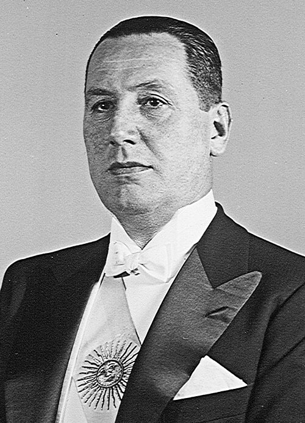

Retrato oficial
Vicepresidente de la Nación Argentina de facto 8 de julio de 1944-10 de octubre de 1945 (1 año, 3 meses y 2 días) Presidente Edelmiro Farrell (de facto) Predecesor Edelmiro Farrell (de facto) Sucesor Juan Pistarini (de facto)
Ministro de Guerra de la Nación Argentina 24 de febrero de 1944-8 de octubre de 1945 (1 año, 7 meses y 13 días) Presidente Pedro Pablo Ramírez Edelmiro J. Farrell (de facto) Predecesor Edelmiro Farrell Sucesor Eduardo Ávalos Información personal Apodo El General Juancito Pocho El Viejo Nacimiento 8 de octubre de 1895 Lobos, Buenos Aires, Argentina Fallecimiento 1 de julio de 1974 (78 años) Olivos, Buenos Aires, Argentina Causa de muerte Fibrilación ventricular Sepultura Quinta de San Vicente y Partido de San Vicente Nacionalidad Argentino Religión Católica Familia Padres Mario Tomás Perón Juana Salvadora Sosa Cónyuge Aurelia Tizón (matr. 1929; viu. 1938) Eva Duarte (matr. 1945; viu. 1952) María Estela Martínez Cartas (matr. 1961; fall. 1974) Familiares Tomás Liberato Perón (abuelo paterno) Educación Educado en Colegio Militar de la Nación Información profesional Ocupación Político y militar Área Infantería Movimiento Peronismo Seudónimo Descartes[1] Lealtad Argentina Rango militar Teniente general[4] Conflictos Golpe de Estado en Argentina de 1930, Revolución del 43, Bombardeo de la Plaza de Mayo, Resistencia peronista y Día de la Lealtad Partido político Partido Laborista (1945-1946) Partido Justicialista (1946-1974) Afiliaciones Frente Justicialista de Liberación (1972-1974) Firma
Juan Domingo Perón (Lobos, 8 de octubre de 1895 ‑ Olivos, 1 de julio de 1974)[5] fue un político, militar y ensayista argentino, tres veces presidente de la Nación. Es el fundador del peronismo o justicialismo, la única persona en ser elegida tres veces presidente de Argentina y la primera en ser electa por sufragio universal masculino y femenino.[6]
Hizo la carrera militar en el Ejército. En 1930, con el grado de capitán, apoyó la Revolución de 1930 que derrocó a Hipólito Yrigoyen, una decisión de la que más tarde se arrepentiría. En 1939, fue enviado en una misión de estudio a Italia y luego viajó a otros países, incluidos Alemania, Francia, España, Yugoslavia y la Unión Soviética.[7] Fue durante su estadía en Europa cuando Perón desarrolló muchas de sus ideas políticas.[8] Participó en la Revolución del 43, liderada por un grupo de militares nacionalistas organizados bajo el GOU, con el objetivo de poner fin a las políticas predominantes durante la Década Infame. Allí asumió diversos cargos, entre ellos la titularidad del Departamento Nacional de Trabajo, la Secretaría de Trabajo y Previsión, el Ministerio de Guerra y la vicepresidencia de la Nación.
Desde los dos primeros cargos, estableció una alianza con los sindicatos y adoptó medidas orientadas a beneficiar a los sectores obreros y a implementar de manera efectivas las leyes laborales. Entre sus iniciativas más destacadas se encuentran la promoción de los convenios colectivos, la creación del Estatuto del Peón de Campo, la instauración de los tribunales del trabajo y la extensión de las jubilaciones a los empleados de comercio. Estas políticas le valieron el apoyo de una parte significativa del movimiento obrero, pero también el rechazo de los sectores empresariales, la oligarquía y aristocracia nacional, así como también de gobiernos extranjeros, como lo demuestra el apoyo del embajador de los Estados Unidos, Spruille Braden, al amplio movimiento opositor que surgió desde 1945.
En octubre de 1945, un golpe palaciego lo forzó a renunciar a todos sus cargos y luego ordenó su arresto, lo que desembocó en una masiva movilización obrera el 17 de octubre de 1945 que logró su inmediata liberación, tomando forma el movimiento justicialista bajo su liderazgo. En ese mismo año, contrajo matrimonio con María Eva Duarte, quien desempeñó un papel político importante durante la presidencia de Perón.[9][10]
Se presentó como candidato a presidente en las elecciones de 1946 y resultó triunfador. Tiempo después fusionó los tres partidos que habían sostenido su candidatura para crear primero el Partido Único de la Revolución y luego el Partido Peronista; tras la Reforma Constitucional de 1949, fue reelegido en 1951 en las primeras elecciones realizadas con participación de mujeres y varones en Argentina. Además de continuar con sus políticas en «pos de favorecer a los sectores más postergados», su gobierno se caracterizó por implementar una línea nacionalista en lo económico e industrialista, sobre todo en lo tocante a la industria textil, siderúrgica, militar, de transporte y comercio exterior. En política internacional sostuvo una «tercera posición» ante la Unión Soviética y los Estados Unidos, en el marco de la Guerra Fría. En su último año de gobierno se enfrentó con la Iglesia católica, acrecentando el enfrentamiento entre peronistas y antiperonistas, por lo que el Gobierno de Perón endureció su persecución hacia la oposición y a los medios de prensa opositores. Tras el surgimiento y el gradual recrudecimiento de la violencia por parte del antiperonismo, especialmente por los bombardeos del 16 de junio de 1955, Perón fue derrocado en septiembre de ese mismo año por un golpe cívico-militar autodenominado "Revolución Libertadora".
La dictadura subsiguiente proscribió al peronismo de la vida política y derogó la reforma constitucional. Tras su derrocamiento Perón se exilió en Paraguay, Panamá, Nicaragua, Venezuela, República Dominicana y finalmente en España. Viudo desde 1952, durante su exilio se casó con María Estela Martínez. En su ausencia, surgió en Argentina un movimiento conocido como la resistencia peronista, integrada por diversos grupos sindicales, juveniles, estudiantiles, barriales, religiosos, culturales y guerrilleros, que tenían como fin común la vuelta de Perón y la convocatoria a elecciones libres y sin proscripciones.
Intentó retornar al país en 1964, pero el presidente Arturo Illia lo impidió solicitando a la dictadura militar gobernante en Brasil que lo detuviera y lo enviara de regreso a España. Retornó finalmente al país en 1972 para radicarse definitivamente en 1973. Con Perón, aunque no proscripto, pero si inhabilitado por no encontrarse en el país desde el 25 de agosto, el peronismo ganó las elecciones en marzo de 1973, abriendo el período conocido como tercer peronismo.[11]
Un mes y medio después de asumir, el presidente Cámpora renunció y se convocaron nuevas elecciones sin proscripciones. Perón se presentó junto a su esposa como candidatos a presidente y vicepresidenta respectivamente en septiembre de 1973 y logró un amplio triunfo, asumiendo el Gobierno en octubre de ese mismo año. Falleció a mediados de 1974, dejando la Presidencia en manos de la vicepresidenta, la cual fue derrocada sin haber terminado su mandato. El peronismo continuó existiendo y ha logrado varios triunfos electorales después de la muerte de Perón.